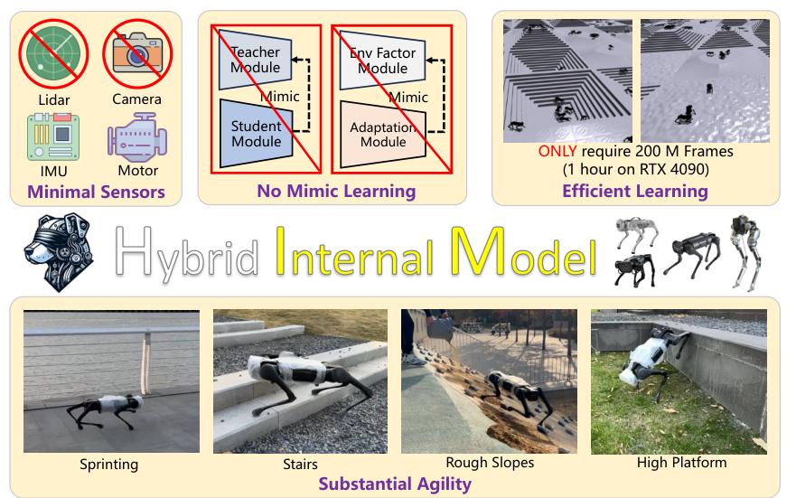
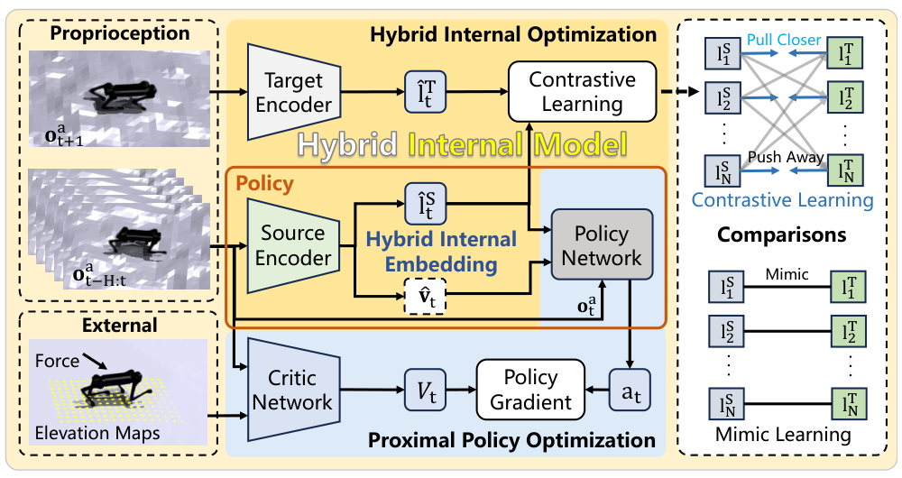
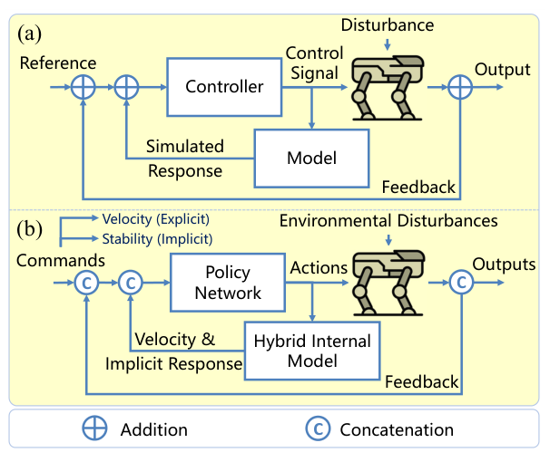
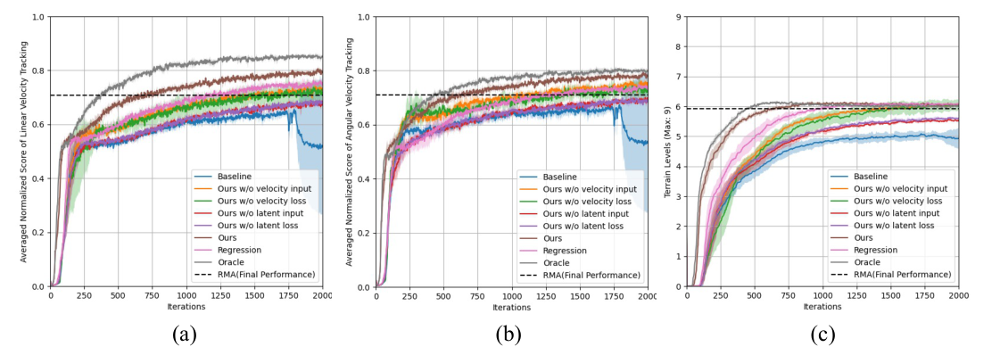
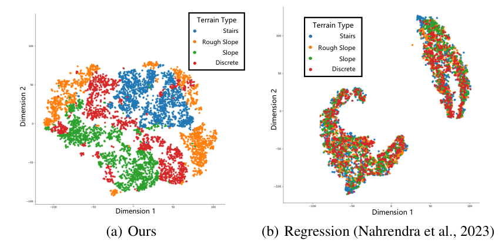

Background & Motivation
HIMLoco 把四足盲走的「狀態估測」換了一個估測目標:不去估地形高度、摩擦係數這些外部擾動本身,而是借古典 Internal Model Control(IMC) 的想法,從 5 步本體感測歷史估「機器人對擾動的反應」——一個顯式的體速 \(\hat{\mathbf v}_t\)(用模擬真值回歸)加一個隱式的 16 維穩定性 latent \(\hat{\mathbf l}_t\)(用 SwAV 式原型對比學習對齊「下一步」本體觀測)。單階段 PPO、沒有 teacher-student 模仿、只用 IMU + 關節編碼器、RTX 4090 訓練約 1 小時;實機 Aliengo 長程樓梯連爬 176.5 階(RMA 75.4、Walk These Ways 0),42 cm 踩空落台 100% 不倒。
HIMLoco changes what a blind quadruped should estimate: not the external disturbances themselves (terrain height, friction), but—borrowing classical Internal Model Control (IMC)—the robot's response to them, inferred from 5 steps of proprioceptive history. The response is hybrid: an explicit body velocity \(\hat{\mathbf v}_t\) (regressed to sim ground truth) plus an implicit 16-D stability latent \(\hat{\mathbf l}_t\), trained with SwAV-style prototype contrastive learning to agree with the next proprioceptive observation. One-stage PPO, no teacher-student imitation, IMU + joint encoders only, ~1 hour on an RTX 4090. On hardware, an Aliengo climbs 176.5 stairs nonstop (RMA 75.4, Walk These Ways 0) and survives a 42 cm missed step 100% of the time.

如果只有 30 秒In 30 seconds
- 問題 — 盲走需要知道外部狀態(地形、摩擦、外力),主流做法是兩階段:先訓 oracle,再讓學生模仿(teacher-student / RMA)。作者認為這有兩個硬傷:回歸「絕對環境參數」會被 domain randomization 的雜訊卡住;模仿階段必然損失資訊。
- Problem — Blind walking needs external state (terrain, friction, pushes). The mainstream recipe is two-stage: train an oracle, then have a student imitate it (teacher-student / RMA). The authors see two flaws: regressing absolute environment parameters gets stuck on domain-randomization noise, and the imitation phase inevitably loses information.
- 方法 — 一顆 MLP 從 \(\mathbf o^a_{t-H:t}\) 輸出 hybrid internal embedding \((\hat{\mathbf v}_t,\hat{\mathbf l}_t)\):速度用真值回歸;latent 與「target encoder 看到的 \(\mathbf o^a_{t+1}\)」做 SwAV 交換分群預測(Sinkhorn + 16 個原型)。每個 iteration 先更新 HIM、再凍結它跑 PPO;critic 可看特權外力與地形高度。
- Method — One MLP maps \(\mathbf o^a_{t-H:t}\) to a hybrid internal embedding \((\hat{\mathbf v}_t,\hat{\mathbf l}_t)\): velocity is regressed to ground truth; the latent plays a SwAV swapped-assignment game (Sinkhorn + 16 prototypes) with a target encoder that sees \(\mathbf o^a_{t+1}\). Each iteration updates HIM first, then freezes it for PPO; the critic sees privileged force and terrain height.
- 結果 — 實機 8 項測試(A1/Aliengo)全部持平或勝過 RMA / Walk These Ways / 內建 MPC(拖曳一項與 RMA 平手);模擬中難地形(樓梯、離散障礙)追蹤誤差約為 RMA 的一半;消融顯示拿掉 latent 輸入,長程樓梯從 176.5 掉到 13.3 階。
- Results — On 8 hardware tests (A1/Aliengo) it matches or beats RMA / Walk These Ways / the built-in MPC everywhere (tied with RMA on dragging). In simulation, tracking error on hard terrain (stairs, discrete obstacles) is roughly half of RMA's. Ablations: removing the latent input drops long-range stairs from 176.5 to 13.3 steps.
領域脈絡Field context
Isaac Gym 的大規模平行模擬(Rudin et al. 2022「Learning to walk in minutes」)讓 RL 四足控制器成為主流。盲走這一支的核心難題是 部分可觀測:真機只有關節編碼器與 IMU,看不到地形、摩擦、外力。歷來有兩種補法:
Massively parallel simulation in Isaac Gym (Rudin et al. 2022, "Learning to walk in minutes") made RL quadruped controllers mainstream. The core difficulty of the blind branch is partial observability: a real robot has joint encoders and an IMU, but can't see terrain, friction, or external forces. Two families of fixes exist:
- 模仿式(mimic learning):Lee 2020 / Miki 2022 的 teacher-student(學生模仿老師行為),以及 RMA(Kumar 2021)的 adaptation(學生從歷史回歸老師的 env-factor latent)。兩者都是兩階段。
- Mimic learning: the teacher-student scheme of Lee 2020 / Miki 2022 (the student imitates the teacher's behavior), and RMA's (Kumar 2021) adaptation (the student regresses the teacher's env-factor latent from history). Both are two-stage.
- 動力學學習式:DayDreamer(world model)、DreamWaQ(Nahrendra 2023:非對稱 actor-critic + β-VAE 估體速與 context、重建下一步觀測)。作者指出它們共同點是用回歸目標,在 DR 雜訊下會「去擬合雜訊、最終 representation collapse」。
- Dynamics learning: DayDreamer (a world model) and DreamWaQ (Nahrendra 2023: asymmetric actor-critic + a β-VAE estimating velocity and context by reconstructing the next observation). The authors argue their shared trait is a regression objective, which under DR noise "fits the random noise, eventually resulting in representation collapse."
HIM 自認屬於第二支,但主張兩個差異:不走昂貴的 MBRL、不用回歸當輔助 loss,改用原型對比學習(SwAV / Proto-RL / DreamerPro 一系)——只要求編碼器分辨「現在的處境和其他處境有何不同」,而非精確擬合目標值。
HIM places itself in the second family but claims two differences: no expensive MBRL, and no regression as the auxiliary loss—instead, prototypical contrastive learning (the SwAV / Proto-RL / DreamerPro line), which only asks the encoder to distinguish how the current situation differs from others rather than fit target values exactly.
這篇的賣點其實是一個重新命名 + 換 loss:「從歷史估速度與一個與下一步觀測掛鉤的 latent」這副骨架,DreamWaQ 已經有了;HIM 的新東西是 (1) 用 IMC 給它一個控制理論的說法——「估反應而非估擾動」;(2) 把重建/回歸換成 SwAV 式對比。實驗上它確實在最難的長程樓梯、踩空任務拉開差距,這讓它很快成為後續盲走工作的常用 baseline 與 codebase。[導讀補充]
The pitch is really a reframing plus a loss swap: the skeleton "estimate velocity and a latent tied to the next observation, from history" already existed in DreamWaQ. HIM's novelty is (1) giving it a control-theoretic story via IMC—"estimate the response, not the disturbance"—and (2) replacing reconstruction/regression with SwAV-style contrast. Empirically it does open a gap on the hardest tasks (long stairs, missed steps), which quickly made it a go-to baseline and codebase for later blind-locomotion work. [guide note]
核心洞見 · KEY INSIGHTSKEY INSIGHTS
值得帶走的不是「又一個四足 SOTA」,而是這幾個設計觀念:
What's worth taking away is not "another quadruped SOTA" but these design ideas:
- 估「反應」,不估「原因」。 地形、摩擦、恢復係數高維又難觀測;但它們對機器人的影響都會出現在本體感測的下一步裡。IMC 的精神正是:不顯式建模擾動,也能靠內部模型的回授做穩健控制。
- Estimate the response, not the cause. Terrain, friction, and restitution are high-dimensional and hard to observe, but their effect on the robot shows up in the next proprioceptive step. That's IMC's spirit: robust control via internal-model feedback, without explicitly modeling the disturbance.
- 「Hybrid」= 顯式的就監督、隱式的就自監督。 任務的顯式目標是追速度 → 速度有模擬真值,直接回歸;隱式目標是保持穩定 → 沒有標籤,用「與未來狀態一致」當自監督訊號。
- "Hybrid" = supervise the explicit part, self-supervise the implicit part. The explicit goal is tracking velocity → sim ground truth exists, so regress it. The implicit goal is staying stable → no label, so use "consistency with the future state" as the self-supervised signal.
- 對比 > 回歸(作者主張)。 原型對比只要求分群正確,不要求擬合被 DR 雜訊污染的目標值;且一個 batch 同時含 4096 個不同環境,「batch-level information」讓編碼器學會區分地形。證據主要是 t-SNE 與 Regression 消融。
- Contrast > regression (authors' claim). Prototype contrast only asks for correct cluster assignments, not for fitting DR-noise-corrupted targets; and a batch holds 4096 different environments at once, so "batch-level information" teaches the encoder to tell terrains apart. Evidence: mainly a t-SNE plot and the Regression ablation.
- Sim 與 real 的觀測一致。 source 與 target encoder 都只吃本體感測,部署時看到的和訓練時完全一樣,沒有「學生追不上老師」的資訊落差。特權資訊只留給 critic(部署時丟掉)。
- Consistent observations in sim and real. Both source and target encoders see only proprioception, so what the deployed policy sees is exactly what it trained on—no "student can't match the teacher" information gap. Privileged info is left to the critic (discarded at deployment).
- latent 是最關鍵的那一半。 實機消融:去掉 latent 輸入或 latent loss,長程樓梯 176.5 → 13.3 / 10.6 階、踩空 100% → 5% / 0%;去掉速度則 → 51–55 階。兩者都需要,但隱式那半更致命。
- The latent is the critical half. Hardware ablation: removing the latent input or latent loss drops long stairs 176.5 → 13.3 / 10.6 steps and missed-step success 100% → 5% / 0%; removing velocity → 51–55 steps. Both are needed, but losing the implicit half is far worse.
Problem Diagnosis
現況 vs 痛點Status quo vs pain points
作者在 Introduction 點名兩階段範式的三個限制:
The Introduction names three limits of the two-stage paradigm:
| 現況Status quo | 痛點Pain point |
|---|---|
| 回歸絕對環境參數Regressing absolute env parameters | DR 對 sim-to-real 有益,但它引入的雜訊限制了模型進一步最佳化——同樣的歷史觀測可能對應很多組參數,回歸目標本身就模糊。DR helps sim-to-real, but the noise it injects restricts further optimization—the same history can correspond to many parameter sets, so the regression target is itself ambiguous. |
| 兩階段模仿Two-phase imitation | 訓練流程複雜,且模仿階段必然有資訊損失——不管是模仿行為(teacher-student)還是模仿 latent(RMA),學生的觀測本來就比老師少。A complicated pipeline, and the imitation phase inevitably loses information—whether imitating behavior (teacher-student) or a latent (RMA), the student simply observes less than the teacher. |
| 依賴外感測器Relying on exteroception | 相機(Agarwal 2023)或 LiDAR(Miki 2022)的配置因平台而異,難以做「通用平台」上的訓練與部署。Camera (Agarwal 2023) or LiDAR (Miki 2022) configurations vary across platforms, making it hard to train and deploy on universal platforms. |
核心問題:「能不能讓策略在整個訓練過程中都不需要外部狀態的模仿目標,只靠本體感測自己推斷擾動?」
The core question: "Can the policy go through training with no imitation target built from external states, inferring disturbances from proprioception alone?"
論文的定位表(Table 1 重建)The paper's positioning table (Table 1, rebuilt)
| 方法Method | 表徵什麼Represents | 外感測器Ext. sensors | 模仿目標Mimic target | 參考資料集Ref. dataset | 樣本數(M)Samples (M) |
|---|---|---|---|---|---|
| Teacher-Student (Miki 2022) | 當前環境參數Current env. params | LiDAR | Behavior | - | Unknown |
| MONO (Agarwal 2023) | 當前環境參數Current env. params | Depth camera | Behavior | - | Unknown |
| AMP (Wu 2022; Escontrela 2022) | 當前環境參數Current env. params | - | Behavior | ✓ | 600 |
| RMA (Kumar 2021) | 當前環境參數Current env. params | - | Latent | - | 1,280 |
| Ours (HIM) | 模擬的機器人反應Simulated robot response | - | - | - | 200 |
「當前環境參數」指當下這一幀的 elevation map、摩擦、恢復係數等。注意樣本數欄是跨不同論文、不同模擬器、不同任務設定的數字,只能當量級參考(見 05 頁)。
"Current env. params" means this frame's elevation map, friction, restitution, etc. Note the sample-count column mixes numbers across papers, simulators, and task setups—treat it as an order-of-magnitude reference only (see tab 05).
Gap 表 — 誰缺什麼,HIM 怎麼補Gap table — who lacks what, and how HIM fills it
| 方法Method | 限制Limitation | HIM 如何補上How HIM fills it |
|---|---|---|
| Teacher-Student (Lee 2020, Miki 2022) |
學生模仿老師行為,性能被老師與觀測落差夾住;Miki 版需 LiDAR 建 elevation map。The student imitates the teacher's behavior, capped by the teacher and the observation gap; Miki's version needs LiDAR elevation maps. | 沒有老師;actor 從頭到尾就是部署時那顆,只吃本體感測 + 自己的估測。No teacher; the actor trained is the one deployed, eating only proprioception + its own estimates. |
| RMA (Kumar 2021) |
第二階段 adaptation module 回歸老師的 env-factor latent——兩階段、回歸被 DR 雜訊污染的目標。Phase-2 adaptation module regresses the teacher's env-factor latent—two phases, regressing a DR-noise-corrupted target. | 單階段交替訓練;latent 目標是下一步本體觀測(自監督),不是特權參數。One-stage alternating training; the latent target is the next proprioceptive observation (self-supervised), not privileged parameters. |
| AMP (Wu 2022) |
需要參考動作資料集。Needs a reference motion dataset. | 只用 reward(沿用 Rudin 2022 / Agarwal 2023),不需資料集。Rewards only (from Rudin 2022 / Agarwal 2023); no dataset. |
| DreamWaQ / DayDreamer | 回歸/重建式目標,作者稱會擬合 DR 雜訊而 representation collapse;MBRL 計算昂貴。Regression/reconstruction objectives, which the authors say fit DR noise and collapse; MBRL is computationally expensive. | 原型對比(SwAV)取代回歸;不做 rollout 想像,只當輔助表徵。Prototype contrast (SwAV) replaces regression; no imagined rollouts, just an auxiliary representation. |
注意作者把「回歸」當成共同敵人:RMA 回歸老師 latent、DreamWaQ 回歸(重建)下一步觀測,都被歸為「要求網路完美擬合目標」。但這兩者性質很不同——前者的目標是特權資訊,後者是自監督。HIM 真正與 DreamWaQ 的差別只剩loss 形式;與 RMA 的差別則是目標從特權換成自監督。讀結果時要分清楚增益是哪一個差別帶來的。[導讀補充]
Note how "regression" is cast as the common enemy: RMA regresses a teacher latent, DreamWaQ regresses (reconstructs) the next observation—both lumped as "requiring the network to fit targets perfectly." But they differ in kind: the former's target is privileged, the latter's is self-supervised. HIM's real delta from DreamWaQ is only the loss form; its delta from RMA is swapping a privileged target for a self-supervised one. When reading results, keep track of which delta produced which gain. [guide note]
Core Method
一次 iteration 做什麼What one iteration does

關鍵 1:IMC 類比——估反應,不估擾動Key idea 1: the IMC analogy — estimate the response, not the disturbance

古典 IMC(Rivera, Morari, Skogestad 1986)的回授訊號是「實際輸出 − 內部模型預測輸出」,在模型準確時恰好等於擾動的估計 [導讀補充]:
In classical IMC (Rivera, Morari, Skogestad 1986), the feedback signal is "actual output − internal-model predicted output," which equals a disturbance estimate when the model is accurate [guide note]:
論文把地形、摩擦、恢復係數都視為系統擾動,主張「直接估它們很難,那就估機器人的反應」。反應有兩面:機器人被顯式命令追一個速度,同時被隱式要求保持穩定——於是 HIM 同時估一個顯式速度與一個隱式反應,與觀測一起餵給 policy,形成「完全閉環」。
The paper treats terrain, friction, and restitution as system disturbances and argues: they're hard to estimate directly, so estimate the robot's response instead. The response has two faces: the robot is explicitly commanded to track a velocity and implicitly required to stay stable—so HIM estimates an explicit velocity and an implicit response together, feeding both with the observation into the policy to "close the loop."
關鍵 2:狀態、動作與 hybrid internal embeddingKey idea 2: state, action, and the hybrid internal embedding
actor 的部分觀測與 critic 的特權觀測:
The actor's partial observation and the critic's privileged observation:
source encoder \(\phi_{\text{src}}\)(3 層 MLP,512-256-128)從 \(H=5\) 步歷史抽出 embedding;policy \(\pi\) 吃 embedding 與當前觀測;動作是相對名目關節角的偏移,乘上縮放 \(k\le 1\):
The source encoder \(\phi_{\text{src}}\) (3-layer MLP, 512-256-128) extracts the embedding from \(H=5\) steps of history; the policy \(\pi\) takes the embedding plus the current observation; actions are offsets from nominal joint angles, scaled by \(k\le 1\):
兩半各有各的監督:
Each half gets its own supervision:
- 顯式 \(\hat{\mathbf v}_t\):作者承認「直接預測 \(\mathbf o^a_{t+1}\)」才最符合 IMC,但狀態高維且 sim/real 有落差;既然在模擬裡訓練,速度直接用真值回歸。
- Explicit \(\hat{\mathbf v}_t\): the authors concede that directly predicting \(\mathbf o^a_{t+1}\) would be most IMC-faithful, but states are high-dimensional and sim/real differ; since training is in sim, velocity is regressed to ground truth.
- 隱式 \(\hat{\mathbf l}_t\):放在 latent 空間 \(\mathcal Z\subset\mathbb R^{16}\),用對比學習拉近它與下一步狀態的表徵——「反應」天然藏在後繼狀態 \(\mathbf o^a_{t+1}\) 裡。
- Implicit \(\hat{\mathbf l}_t\): lives in a latent space \(\mathcal Z\subset\mathbb R^{16}\), and contrastive learning pulls it toward the representation of the next state—the "response" is naturally embedded in the successor state \(\mathbf o^a_{t+1}\).
速度 loss 論文沒寫出式子,只說「用真值回歸」、權重 1.0;以下為導讀依慣例的重建 [導讀補充]:
The paper never writes the velocity loss—only "regress using ground truth," weight 1.0. Below is the guide's conventional reconstruction [guide note]:
關鍵 3:Hybrid Internal Optimization(SwAV 式原型對比)Key idea 3: Hybrid Internal Optimization (SwAV-style prototype contrast)
配對規則:每個 iteration 以各環境收集到的軌跡為一個 batch;若 \(\mathbf o^a_{t+1}\) 與 \(\mathbf o^a_{t-H:t}\) 來自同一條軌跡就是正對,否則為負對。歷史串接成 source 向量、下一步觀測當 target 向量,分別過 source / target encoder,得到 \(\mathbf l^{\text{source}}_t\)(即 \(\hat{\mathbf l}_t\))與 \(\mathbf l^{\text{target}}_t\),再 L2 正規化到單位球面。
Pairing rule: each iteration, trajectories collected in each environment form a batch; if \(\mathbf o^a_{t+1}\) and \(\mathbf o^a_{t-H:t}\) come from the same trajectory they're a positive pair, otherwise negative. The concatenated history is the source vector and the next observation is the target vector; each goes through its encoder to give \(\mathbf l^{\text{source}}_t\) (i.e. \(\hat{\mathbf l}_t\)) and \(\mathbf l^{\text{target}}_t\), L2-normalized onto the unit sphere.
分群機率(Eq.1):\(K=16\) 個 L2 正規化原型 \(\mathbf E=\{\bar{\mathbf e}_1,\dots,\bar{\mathbf e}_K\}\),對每個原型的點積取 softmax,\(\tau\) 為溫度:
Cluster probabilities (Eq.1): with \(K=16\) L2-normalized prototypes \(\mathbf E=\{\bar{\mathbf e}_1,\dots,\bar{\mathbf e}_K\}\), take a softmax over dot products with each prototype, temperature \(\tau\):
目標代碼:為避免所有樣本都塌到同一群的平凡解,對兩個 encoder 都用 Sinkhorn-Knopp(Cuturi 2013)算出目標 \(\mathbf q^{\text{source}}_t,\mathbf q^{\text{target}}_t\)。SwAV 原文中這是一個「原型均分」約束下的熵正則最佳運輸 [導讀補充,出自 SwAV]:
Target codes: to avoid the trivial all-in-one-cluster solution, Sinkhorn-Knopp (Cuturi 2013) computes targets \(\mathbf q^{\text{source}}_t,\mathbf q^{\text{target}}_t\) for both encoders. In the SwAV paper this is entropy-regularized optimal transport under an "equal share per prototype" constraint [guide note, from SwAV]:
交換預測目標(Eq.2):用 source 的代碼監督 target 的機率、用 target 的代碼監督 source 的機率:
Swapped-prediction objective (Eq.2): source codes supervise target probabilities and target codes supervise source probabilities:
這裡 \(\mathbf q\log\mathbf p\) 指對 \(k\) 的內積 \(\sum_k q_{t,k}\log p_{t,k}\)。原式的求和索引是 \(t=1..H\)(\(H\) 是歷史長度),但語意上應該是對整個 batch 的樣本平均——記號不夠嚴謹。論文也說「augmentation 跨時間步一致」,但沒說是什麼 augmentation,\(\tau\) 的值也沒給。[導讀補充]
Here \(\mathbf q\log\mathbf p\) denotes the inner product over \(k\), \(\sum_k q_{t,k}\log p_{t,k}\). The printed sum runs over \(t=1..H\) (\(H\) is the history length), whereas semantically it should average over batch samples—loose notation. The paper also says "augmentation is consistent across time steps" but never says what the augmentation is, and \(\tau\) is not given. [guide note]
把 16 個原型想成 16 個「處境類別」(作者取 16 = 4 種地形的平方)。HIM 要求:看過去 5 步的你,和看到下一步的你,要把這段經驗分到同一個類別;Sinkhorn 強迫 batch 裡的樣本平均分到各類,避免偷懶全歸一類。於是 latent 被逼著編碼「這條軌跡和其他 4095 條有何不同」——正是地形與動力學的差異。
Think of the 16 prototypes as 16 "situation categories" (the authors pick 16 = the square of 4 terrain types). HIM demands: you-seeing-the-past-5-steps and you-seeing-the-next-step must assign this experience to the same category; Sinkhorn forces the batch to spread evenly across categories so nobody lazily picks one. The latent is thus forced to encode "how this trajectory differs from the other 4095"—precisely the terrain and dynamics differences.
訓練配方(Sec.3.4 + Appendix A)Training recipe (Sec.3.4 + Appendix A)
| 項目Item | 設定Setting |
|---|---|
| 模擬Simulation | Isaac Gym,4096 平行環境、rollout 長度 100 步;1000 個 rollout ≈ RTX 4090 一小時(到 2000 仍在進步)Isaac Gym, 4096 parallel envs, rollout length 100; 1000 rollouts ≈ one hour on an RTX 4090 (still improving at 2000) |
| PPO | clip 0.2、entropy 0.01、\(\gamma=0.99\)、GAE \(\lambda=0.95\)、desired KL 0.01、lr \(10^{-3}\)、5 epochs、grad clip 10clip 0.2, entropy 0.01, \(\gamma=0.99\), GAE \(\lambda=0.95\), desired KL 0.01, lr \(10^{-3}\), 5 epochs, grad clip 10 |
| HIM | 16 個原型;對比 loss 與速度 loss 權重皆 1.0;lr \(10^{-3}\);\(H=5\);latent 16 維16 prototypes; contrastive and velocity loss weights both 1.0; lr \(10^{-3}\); \(H=5\); 16-D latent |
| Domain randomizationDomain randomization | 本體/連桿質量 \(\times[0.8,1.2]\)、CoM \(\pm0.1\) m、負載 \([-1,3]\) kg、摩擦 \([0.2,2.75]\)、恢復係數 \([0,1]\)、馬達強度 \(\times[0.8,1.2]\)、\(K_p\in[0.8,1.2]\times20\)、\(K_d\in[0.8,1.2]\times0.5\)、延遲 \([0,3\Delta t]\)、外力每軸 \(\pm30\) N、初始關節 \(\times[0.5,1.5]\)body/link mass \(\times[0.8,1.2]\), CoM \(\pm0.1\) m, payload \([-1,3]\) kg, friction \([0.2,2.75]\), restitution \([0,1]\), motor strength \(\times[0.8,1.2]\), \(K_p\in[0.8,1.2]\times20\), \(K_d\in[0.8,1.2]\times0.5\), delay \([0,3\Delta t]\), external force \(\pm30\) N per axis, initial joints \(\times[0.5,1.5]\) |
| 地形課程Terrain curriculum | 20×10 格、每格 10×10 m;斜坡 / 粗糙斜坡 0–40°、樓梯階高 5–23 cm、離散障礙 5–15 cm,比例 0.1 / 0.2 / 0.6 / 0.1;達 80% 線速度追蹤 reward 升級,走不到一半降級20×10 grid of 10×10 m tiles; slopes / rough slopes 0–40°, stairs 5–23 cm step height, discrete obstacles 5–15 cm, proportions 0.1 / 0.2 / 0.6 / 0.1; promote at 80% of linear-tracking reward, demote if less than half the tile is traversed |
| 命令Commands | 樓梯/離散:\(v_{x,y}\in[-1,1]\) m/s、\(\omega\in[-2,2]\) rad/s;斜坡類:\(v_x\in[-3,3]\)、\(\omega\in[-3,3]\);每 25 步重抽Stairs/discrete: \(v_{x,y}\in[-1,1]\) m/s, \(\omega\in[-2,2]\) rad/s; slopes: \(v_x\in[-3,3]\), \(\omega\in[-3,3]\); resampled every 25 steps |
| Reward | 線速度追蹤 \(\exp(-\|\mathbf v^{\text{cmd}}_{xy}-\mathbf v_{xy}\|^2/\sigma)\)(1.0)、角速度追蹤(0.5),\(\sigma=0.25\);懲罰 \(v_z^2\)(−2.0)、姿態、關節加速度、功率、體高、抬腳高度、action rate、smoothnessLinear tracking \(\exp(-\|\mathbf v^{\text{cmd}}_{xy}-\mathbf v_{xy}\|^2/\sigma)\) (1.0), angular tracking (0.5), \(\sigma=0.25\); penalties on \(v_z^2\) (−2.0), orientation, joint accel, power, base height, foot clearance, action rate, smoothness |
符號白話對照Symbols in plain words
| \(\mathbf o^a_t\) | actor 的部分觀測:速度命令、關節角與角速度、機身角速度、重力方向、上一步動作。Actor's partial observation: velocity command, joint positions/velocities, base angular velocity, gravity direction, last action. |
| \(\mathbf o^c_t\) | critic 的特權觀測 = \(\mathbf o^a_t\) + 外力 \(\mathbf f_t\) + 周圍地形高度 \(\mathbf h_t\)(只在訓練用)。Critic's privileged observation = \(\mathbf o^a_t\) + external force \(\mathbf f_t\) + surrounding ground height \(\mathbf h_t\) (training only). |
| \(\mathbf o^a_{t-H:t}\) | 最近 \(H=5\) 步觀測歷史,source encoder 的輸入。The last \(H=5\) steps of observation history; source-encoder input. |
| \(\hat{\mathbf v}_t\) | 估測的機身線速度(顯式反應),用模擬真值監督。Estimated base linear velocity (explicit response), supervised by sim ground truth. |
| \(\hat{\mathbf l}_t\in\mathbb R^{16}\) | 隱式反應 latent(= \(\mathbf l^{\text{source}}_t\)),「穩定性」的表徵。Implicit-response latent (= \(\mathbf l^{\text{source}}_t\)), the "stability" representation. |
| \(\mathbf l^{\text{target}}_t\) | target encoder 對下一步 \(\mathbf o^a_{t+1}\) 的編碼(部署時不需要)。Target encoder's embedding of the next step \(\mathbf o^a_{t+1}\) (not needed at deployment). |
| \(\bar{\mathbf e}_k,\ K=16\) | 可學的 L2 正規化原型,「處境類別」中心。Learnable L2-normalized prototypes—"situation category" centers. |
| \(\mathbf p_t,\ \mathbf q_t\) | 預測的分群機率 / Sinkhorn 算出的目標代碼。Predicted cluster probabilities / Sinkhorn target codes. |
| \(\boldsymbol\theta_0,\ k\) | 名目關節角與動作縮放(\(k\le1\))。Nominal joint angles and action scale (\(k\le1\)). |
Experimental Evidence
實機主結果(Table 2,每項 20 次,↑)Hardware main results (Table 2, 20 trials each, ↑)
| 任務(機器人)Task (robot) | 指標Metric | Ours | RMA | MoB | Built-in MPC |
|---|---|---|---|---|---|
| 短程樓梯(A1)Short-range stairs (A1) | 成功率 %Success % | 100 | 60 | 0 | 0 |
| 長程樓梯(Aliengo)Long-range stairs (Aliengo) | 連爬階數Stairs climbed | 176.5±7.81 | 75.35±19.98 | 0.0 | 0.0 |
| 組合地形(Aliengo)Compositional terrain (Aliengo) | 成功率 %Success % | 85 | 45 | 0 | 0 |
| 可變形斜坡(A1)Deformable slope (A1) | 成功率 %Success % | 55 | 10 | 0 | 0 |
| 拖曳障礙(A1)Dragging obstacle (A1) | 最大重量 kgMax weight kg | 10 | 10 | 7 | 3 |
| 撞擊(A1)Hit (A1) | 最大重量 kgMax weight kg | 8 | 7.5 | 7 | 5 |
| 負載(A1)Payload (A1) | 最大重量 kgMax weight kg | 8 | 7 | 4 | 7 |
| 踩空落台 42 cm(Aliengo)Missed step, 42 cm (Aliengo) | 成功率 %Success % | 100 | 0 | 0 | 0 |
差距最大的是長程樓梯(2.3× RMA)與踩空(100 vs 0)——兩者都需要「持續、快速地察覺腳下變了」。組合地形與可變形斜坡是訓練中沒出現過的地形,作者以此主張開放世界泛化。抗擾動三項差距則小(0.5–1 kg),拖曳與 RMA 平手。
The biggest gaps are long-range stairs (2.3× RMA) and missed steps (100 vs 0)—both require noticing "the ground changed" continuously and fast. Compositional terrain and the deformable slope were never seen in training; the authors cite them as open-world generalization. The three anti-disturbance gaps are small (0.5–1 kg), and dragging ties RMA.
模擬追蹤誤差(Table 3 節錄,Aliengo,↓,4096×5 次)Simulated tracking error (Table 3 excerpt, Aliengo, ↓, 4096×5 trials)
| 地形 · 速度類型 · 範圍Terrain · velocity · range | Ours | Regression | RMA | Baseline | MoB |
|---|---|---|---|---|---|
| 斜坡 · 線速度 · [−1,1] m/sSlopes · linear · [−1,1] m/s | 0.073 | 0.071 | 0.158 | 0.271 | 0.103 |
| 斜坡 · 角速度 · [−2,2] rad/sSlopes · angular · [−2,2] rad/s | 0.124 | 0.130 | 0.134 | 0.202 | 0.114 |
| 斜坡 · 組合 · [−2,2] m/sSlopes · combined · [−2,2] m/s | 0.094 | 0.107 | 0.203 | 0.224 | 0.103 |
| 粗糙斜坡 · 組合 · [−2,2] m/sRough slopes · combined · [−2,2] m/s | 0.103 | 0.137 | 0.221 | 0.284 | 0.195 |
| 樓梯 · 線速度 · [−1,1] m/sStairs · linear · [−1,1] m/s | 0.147 | 0.194 | 0.306 | 0.377 | 1.108 |
| 樓梯 · 組合 · [−1,1] m/sStairs · combined · [−1,1] m/s | 0.135 | 0.217 | 0.337 | 0.405 | 1.270 |
| 離散障礙 · 線速度 · [−1,1] m/sDiscrete · linear · [−1,1] m/s | 0.125 | 0.182 | 0.311 | 0.279 | 0.973 |
| 離散障礙 · 組合 · [−1,1] m/sDiscrete · combined · [−1,1] m/s | 0.125 | 0.206 | 0.305 | 0.374 | 1.254 |
完整表 24 列中 Ours 在 19 列最佳;輸掉的 5 列全在斜坡/粗糙斜坡(被 MoB 勝過 4 列、被 Regression 勝過 2 列,其中一列兩者都比 Ours 好)。難地形上優勢明顯:樓梯、離散障礙的誤差約為 RMA 的 35–50%、Regression 的 55–85%。MoB 在樓梯上誤差 ~1.0–1.3,基本上是不會走。評測只用地形等級 1–4(樓梯階高 \(\le 13\) cm)。
Across all 24 rows, Ours is best in 19; all 5 losses are on slopes / rough slopes (beaten by MoB in 4 rows and by Regression in 2, one row by both). The edge is clear on hard terrain: on stairs and discrete obstacles the error is ~35–50% of RMA's and ~55–85% of Regression's. MoB's ~1.0–1.3 error on stairs means it essentially can't walk there. Evaluation uses only terrain levels 1–4 (stairs \(\le 13\) cm).
模擬消融:學習曲線(Fig.5,10 seeds)Simulation ablation: learning curves (Fig.5, 10 seeds)
指標是正規化追蹤分數與最大可達地形等級:
Metrics are normalized tracking scores and the maximum reachable terrain level:

論文的三點結論:(1) 速度與 latent 都有貢獻,拿掉任一個都退化;(2) HIO 勝 Regression,作者歸因於 batch-level 資訊;(3) RMA 學不到 Oracle 的全部能力,HIM 因觀測一致而更好。
The paper's three conclusions: (1) velocity and latent both contribute—removing either degrades; (2) HIO beats Regression, attributed to batch-level information; (3) RMA can't imitate all of Oracle's ability, while HIM does better thanks to consistent observations.
實機消融(Table 4)——每拿掉一塊,丟多少Hardware ablation (Table 4) — what each removal costs
| 任務Task | Ours | 無速度輸入w/o vel. inp. | 無速度 lossw/o vel. loss | 無 latent 輸入w/o lat. inp. | 無 latent lossw/o lat. loss | Regression | Baseline |
|---|---|---|---|---|---|---|---|
| 短程樓梯 %Short stairs % | 100 | 85 | 80 | 50 | 55 | 85 | 10 |
| 長程樓梯(階)Long stairs (steps) | 176.5 | 51.45 | 54.6 | 13.3 | 10.6 | 155.7 | 0.0 |
| 組合地形 %Compositional % | 85 | 70 | 75 | 50 | 50 | 70 | 15 |
| 可變形斜坡 %Deformable slope % | 55 | 30 | 25 | 0 | 0 | 30 | 0 |
| 拖曳 kgDragging kg | 10 | 10 | 10 | 5 | 5 | 10 | 4 |
| 撞擊 kgHit kg | 8 | 7 | 6.5 | 4 | 4 | 8 | 5.5 |
| 負載 kgPayload kg | 8 | 7 | 7 | 3.5 | 3.5 | 7.5 | 3 |
| 踩空 %Missed step % | 100 | 90 | 90 | 5 | 0 | 65 | 0 |
- latent 是承重牆:「無 latent 輸入」與「無 latent loss」幾乎一樣糟 → latent 的價值完全來自 HIO 的監督,不是多一個輸入通道而已。
- The latent is load-bearing: "w/o latent input" and "w/o latent loss" are about equally bad → the latent's value comes entirely from HIO's supervision, not from having an extra input channel.
- 速度是重要但次要:拿掉速度,長程樓梯 → 51–55 階、踩空仍有 90%。
- Velocity matters, but second: without it, long stairs → 51–55 steps, while missed steps still succeed 90% of the time.
- 對比 vs 回歸:Regression 長程樓梯 155.7(vs 176.5)、踩空 65%(vs 100%)——差距真實但遠小於「有無 latent」;抗擾動三項幾乎打平。
- Contrast vs regression: Regression gets 155.7 long stairs (vs 176.5) and 65% missed steps (vs 100%)—a real gap, but much smaller than "latent vs no latent"; the three anti-disturbance tasks are near-ties.
表徵品質:t-SNE(Fig.4)與原型數(Fig.7)Representation quality: t-SNE (Fig.4) and prototype count (Fig.7)

原型數消融(Appendix B.3,Fig.7):預設 16 = 地形種數的平方。作者寫「性能隨原型數增加而提升直到 64,之後下降」。導讀者看 Fig.7:2 與 4 個原型明顯最差(線速度分數平台約 0.6),8 / 16 / 64 約 0.8,32 / 128 / 512 約 0.74 [導讀補充:讀圖]。也就是說「太少很糟、適中最好」,但曲線並非單調,32 反而比 16、64 差。
Prototype-count ablation (Appendix B.3, Fig.7): the default 16 = the square of the number of terrain types. The authors write "performance improves with more prototypes until 64, then declines." Reading Fig.7: 2 and 4 prototypes are clearly worst (linear score plateaus ~0.6), 8 / 16 / 64 reach ~0.8, 32 / 128 / 512 ~0.74 [guide note: read off the plot]. So "too few is bad, moderate is best," but the curve isn't monotone—32 is worse than both 16 and 64.
Critical Reading
可被質疑的點Contestable points
- 「Internal model」其實是什麼? 古典 IMC 的內部模型是受控體的模型,回授的是「量測 − 模型預測」的殘差。HIM 沒有受控體模型、沒有殘差,也沒有任何穩定性或擾動抑制分析;它就是一顆歷史編碼器加兩個 head。target encoder 吃 \(\mathbf o^a_{t+1}\) 確實讓 latent 帶有「前向動力學」味道,但這與 DreamWaQ 重建 \(\mathbf o_{t+1}\) 是同一個想法。IMC 是好用的直覺與包裝,不是方法的推導來源。
- What is the "internal model," really? In classical IMC the internal model is a model of the plant, and the feedback is the residual "measurement − model prediction." HIM has no plant model, no residual, and no stability or disturbance-rejection analysis; it is a history encoder with two heads. Feeding \(\mathbf o^a_{t+1}\) to the target encoder does give the latent a "forward-dynamics" flavor, but that's the same idea as DreamWaQ reconstructing \(\mathbf o_{t+1}\). IMC is useful intuition and packaging, not where the method is derived from.
- 與「顯式特權估測器」的界線比宣稱的模糊:速度頭就是顯式特權估測(用模擬真值回歸),消融顯示它對長程樓梯貢獻 3 倍以上;critic 也吃特權地形與外力。「不模仿」成立,「不用特權」不成立。與 RMA 真正的差別是 latent 的目標從特權 env factor 換成自監督的下一步觀測。
- The line from "explicit privileged estimators" is blurrier than claimed: the velocity head is an explicit privileged estimator (regressed to sim truth), and the ablation shows it contributes over 3× on long stairs; the critic also eats privileged terrain and force. "No imitation" holds; "no privilege" doesn't. The real difference from RMA is that the latent's target switches from privileged env factors to the self-supervised next observation.
- Baseline 公平性:(1) MoB(Walk These Ways)是為平地行為多樣性設計的盲走控制器,本來就不是要爬樓梯——樓梯誤差 1.1、實機 0% 是預期中的,把它列進來放大了勝幅。(2) RMA 是作者重現的,其模擬器、reward、DR、網路大小是否與 HIM 對齊沒有交代;Table 1 的 1,280M 樣本數來自原論文不同的設定。(3) 最直接的競爭者 DreamWaQ 沒有以原版出現,只以「Regression」消融代表(Fig.4 標註 Nahrendra 2023),而它在實機長程樓梯拿到 155.7,與 HIM 的 176.5 差距遠比 RMA 小。
- Baseline fairness: (1) MoB (Walk These Ways) is a blind controller built for gait diversity on flat ground, not for stairs—1.1 tracking error and 0% on hardware stairs are expected, and including it inflates the win. (2) RMA is a reimplementation whose simulator, rewards, DR, and network size are not stated to match HIM's; Table 1's 1,280M samples come from the original paper's different setup. (3) The most direct competitor, DreamWaQ, never appears in original form—only as the "Regression" ablation (labeled Nahrendra 2023 in Fig.4)—and it reaches 155.7 hardware long stairs, a far smaller gap to HIM's 176.5 than RMA's.
- 模擬指標太窄、太簡單:模擬只比速度追蹤誤差,而且只在地形等級 1–4(樓梯 \(\le 13\) cm);沒有跌倒率、能耗、足端打滑、高難度等級的成功率。Fig.5(c) 中連 Oracle 也只到約 6/9 級,最難的地形其實沒人解掉。
- Sim metrics are narrow and easy: simulation compares only velocity-tracking error, and only at terrain levels 1–4 (stairs \(\le 13\) cm); no fall rate, energy, foot slip, or success at high difficulty. In Fig.5(c) even Oracle only reaches ~level 6 of 9—the hardest terrain is actually unsolved by everyone.
- 實機統計:每項 20 次,但只有樓梯階數有信賴區間,成功率沒有;最大重量以 0.5–1 kg 為級距,差 0.5 kg 很可能在誤差內。「所有任務都勝出」在拖曳一項其實是平手。標題級的「traverse any terrain under any disturbances」只有 8 項測試支撐。
- Hardware statistics: 20 trials each, but only the stair count carries a confidence interval; success rates don't. Max-weight is measured in 0.5–1 kg steps, so a 0.5 kg gap may be within noise. "Outperforms on all tasks" is actually a tie on dragging. The headline "traverse any terrain under any disturbances" rests on eight tests.
- 對比 > 回歸的證據偏弱:「回歸會擬合 DR 雜訊而 collapse」只由一張 t-SNE 支撐;t-SNE 的分群外觀對 perplexity 敏感,且「把地形類型分開」不等於「編碼了 policy 需要的動力學資訊」。缺少線性探針(摩擦、地形高度、外力)這類量化。
- Evidence for contrast > regression is thin: "regression fits DR noise and collapses" rests on one t-SNE plot; t-SNE cluster appearance is perplexity-sensitive, and "separating terrain types" isn't the same as "encoding the dynamics the policy needs." No quantitative probes (friction, terrain height, force).
- 內部一致性問題 [導讀補充]:(1) 宣稱 200M frames,但 \(4096\times100\times1000\approx4.1\times10^8\);Table 7 的 batch size 寫 \(4096\times200\) 又與 rollout 長度 100 不符。(2) 訓練時 \(K_p\) 隨機化在 \([16,24]\)、\(K_d\in[0.4,0.6]\),部署卻用 \(k_p=30/40\)、\(k_d=0.75/2.0\)(除非各機型名目值不同但未交代)。(3) 消融列了 6 種地形卻只給 4 個比例。(4) 原型數消融的文字前後矛盾(先說到 64 都在進步,又說「原型少最後性能更好」),與 Fig.7 也不符。(5) Table 稱「Vertical Hit」、附錄稱「Lateral hit」。(6) augmentation 內容與 \(\tau\) 未給。
- Internal-consistency issues [guide note]: (1) it claims 200M frames, but \(4096\times100\times1000\approx4.1\times10^8\); Table 7's batch size \(4096\times200\) also conflicts with a rollout length of 100. (2) Training randomizes \(K_p\) in \([16,24]\) and \(K_d\in[0.4,0.6]\), yet deployment uses \(k_p=30/40\), \(k_d=0.75/2.0\) (unless per-robot nominal values differ, which isn't stated). (3) The ablation lists six terrain types but only four proportions. (4) The prototype-ablation text contradicts itself ("improves up to 64," then "fewer prototypes reach superior final performance") and doesn't match Fig.7. (5) The table says "Vertical Hit," the appendix "Lateral hit." (6) The augmentation and \(\tau\) are unspecified.
給讀書會 / 審稿的犀利問題Sharp questions for a reading group / review
- 真是對比的功勞? 把 DreamWaQ 的 β-VAE 重建換成 SwAV、其他全部相同(encoder 與 PPO 脫鉤、同樣的速度頭、同 DR),差距剩多少?增益來自 loss 還是訓練協議?
- Is it really the contrast? Swap DreamWaQ's β-VAE reconstruction for SwAV with everything else equal (encoder detached from PPO, same velocity head, same DR)—how much of the gap remains? Is the gain from the loss or the training protocol?
- latent 編碼了什麼? 對 \(\hat{\mathbf l}_t\) 做線性探針預測摩擦、地形高度、負載、外力,準確度如何?「穩定性表徵」這個名字有實證嗎?
- What does the latent encode? Linear-probe \(\hat{\mathbf l}_t\) for friction, terrain height, payload, external force—how accurate? Is there evidence behind the name "stability representation"?
- IMC 類比承重嗎? 若照真正的 IMC 做法,把「預測下一步 − 實際下一步」的殘差當回授訊號,會更好還是更差?如果不會變好,IMC 這個框架貢獻了什麼?
- Is the IMC analogy load-bearing? Following real IMC—feeding back the residual "predicted next step − actual next step"—would it do better or worse? If not better, what does the IMC framing contribute?
- 正負對的定義:同一地形、不同環境的兩段軌跡會被當成「負對」嗎(false negatives)?SwAV 沒有顯式負樣本,Fig.2 的拉近/推開與實際機制如何對應?
- Pair definitions: are two trajectories on the same terrain in different envs treated as "negatives" (false negatives)? SwAV has no explicit negatives—how does Fig.2's pull/push map onto the actual mechanism?
- Baseline 公平性:用 RMA 原始碼與兩階段預算、DreamWaQ 原始碼重跑,並把 MoB 換成有樓梯課程的版本,Table 2 的勝幅還剩多少?
- Baseline fairness: rerun RMA with its original code and two-stage budget, DreamWaQ with its original code, and replace MoB with a stair-curriculum version—how much of Table 2's margin survives?
Takeaways
對你研究的啟發Implications for your research
- 「估反應,不估原因」是可移植的設計模式:當潛在擾動高維、難觀測(接觸、摩擦、負載),與其回歸它們的參數,不如學一個與「未來會發生什麼」一致的表徵。在操作(接觸豐富的 manipulation)上同樣適用。
- "Estimate the response, not the cause" is a portable design pattern: when latent disturbances are high-dimensional and hard to observe (contact, friction, payload), instead of regressing their parameters, learn a representation consistent with "what happens next." It applies equally to contact-rich manipulation.
- 顯式/隱式分流:有真值且與任務指標直接相關的量(速度)就監督;沒有標籤的部分用自監督目標。這比「全部丟給一個 latent」或「全部回歸特權資訊」都務實。
- Explicit/implicit split: supervise quantities that have ground truth and directly tie to the task metric (velocity); use a self-supervised target for the unlabeled rest. More pragmatic than "one latent for everything" or "regress all privileged info."
- 輔助表徵與 RL 梯度脫鉤:Baseline(encoder 只用 PPO 訓)在實機幾乎全滅。若你的 RL 系統有歷史編碼器,先給它一個有語意的輔助目標,再考慮要不要讓 RL 梯度流進去。
- Detach the auxiliary representation from RL gradients: the Baseline (encoder trained only by PPO) nearly fails across the board on hardware. If your RL system has a history encoder, give it a meaningful auxiliary target first, then decide whether RL gradients should flow in.
- 拿它當盲走 baseline / codebase:一小時單卡訓練、無老師、無資料集、開源,是做新想法(地形感知、人形、力控)時很合適的起點。[導讀補充]
- Use it as a blind-locomotion baseline / codebase: one-hour single-GPU training, no teacher, no dataset, open source—a good starting point for new ideas (perception, humanoids, force control). [guide note]
在學習式足式控制脈絡中的位置Where it sits in the learning-based legged line
| 工作Work | 如何處理看不到的外部狀態How it handles unobserved external state |
|---|---|
| RMA (Kumar 2021) | 顯式特權 → 蒸餾:老師把 env factors 編成 latent,第二階段 adaptation module 從歷史回歸它。Explicit privilege → distillation: a teacher encodes env factors into a latent; a phase-2 adaptation module regresses it from history. |
| Walk These Ways (Margolis & Agrawal) | 換一條軸:不估環境,而是學一族可調步態(MoB),由人在部署時選行為;以平地為主。A different axis: not estimating the environment, but learning a family of tunable gaits (MoB) that a human selects at deployment; mostly flat ground. |
| DreamWaQ (Nahrendra 2023) | 單階段、非對稱 critic + 估測器:速度回歸 + β-VAE latent(重建下一步)。One-stage asymmetric critic + estimator: velocity regression + β-VAE latent (reconstruct the next step). |
| HIMLoco (Long 2024) | 同骨架,隱式 internal model:速度回歸 + SwAV 原型對比 latent(對齊下一步),encoder 與 PPO 脫鉤,用 IMC 命名。Same skeleton, implicit internal model: velocity regression + SwAV prototype-contrast latent (aligned to the next step), encoder detached from PPO, IMC framing. |
一句話:這條線從「顯式估特權參數再蒸餾」(RMA)走向「隱式學一個與未來一致的表徵」(DreamWaQ → HIM)。[導讀補充] 同團隊後續把同一思路延伸到 H-Infinity 式對抗擾動訓練與加入感知的人形版本(PIM)。
In one line: the lineage moves from "explicitly estimate privileged parameters, then distill" (RMA) to "implicitly learn a representation consistent with the future" (DreamWaQ → HIM). [guide note] The same group later extended the idea to H-Infinity-style adversarial-disturbance training and a perceptive humanoid version (PIM).
值得引用的點What's worth citing
| 當你要主張…When you claim… | 就引這篇Cite this for |
|---|---|
| 「只用本體感測的單階段 RL 就能做到高難度盲走」"One-stage proprioception-only RL can achieve hard blind locomotion" | 實機長程樓梯 176.5 階、42 cm 踩空 100%。176.5 hardware long stairs, 100% on a 42 cm missed step. |
| 「原型對比可取代重建/回歸當 RL 輔助 loss」"Prototype contrast can replace reconstruction/regression as an RL auxiliary loss" | HIO vs Regression 消融與 t-SNE(注意證據強度有限)。The HIO vs Regression ablation and t-SNE (mind the limited evidence strength). |
| 「與 IMC 的概念連結」"A conceptual link to IMC" | 作為「估反應而非估擾動」的直覺來源,而非理論保證。As the source of the "estimate the response, not the disturbance" intuition, not as a theoretical guarantee. |
HIMLoco 用 IMC 的語言重新包裝了 DreamWaQ 式的盲走估測器——顯式回歸速度、用 SwAV 原型對比讓隱式 latent 與下一步一致——而這個看似小的 loss 替換配上脫鉤訓練,在實機最難的樓梯與踩空任務上帶來數倍於 RMA 的表現;它的 internal model 是「與未來一致的表徵」,不是真正的系統模型。
HIMLoco rewraps a DreamWaQ-style blind-walking estimator in IMC language—regress velocity explicitly, and use SwAV prototype contrast to make an implicit latent consistent with the next step—and this seemingly small loss swap, plus detached training, yields multi-fold gains over RMA on the hardest real stair and missed-step tasks. Its "internal model" is a future-consistent representation, not a true system model.